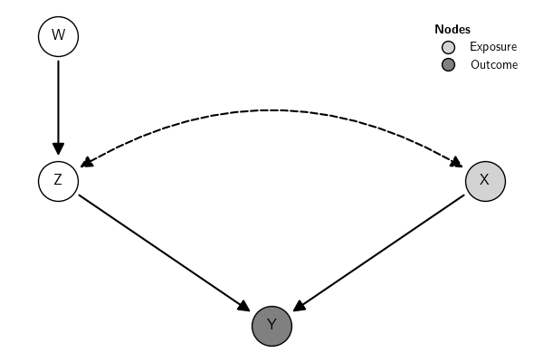

Simulate Data
The submodule simulate contains many classes that allow simulating
data from specific models. For details, see
Documentation.
The object with the simulated data contains additional information, such as the parameter values used in the simulation. Below is an example of simulated data from a Graphical Model. Here is the graph:

To simulate data from a linear structure model based on that graph, use:
Here are the data and some relevant pieces of information stored in the
sim object:
shape: (5, 6)
┌─────┬─────┬─────┬─────┬─────┬─────┐
│ X ┆ W ┆ ('Z ┆ Z ┆ ('X ┆ Y │
│ --- ┆ --- ┆ ', ┆ --- ┆ ', ┆ --- │
│ f64 ┆ f64 ┆ 'X' ┆ f64 ┆ 'Z' ┆ f64 │
│ ┆ ┆ ) ┆ ┆ ) ┆ │
│ ┆ ┆ --- ┆ ┆ --- ┆ │
│ ┆ ┆ f64 ┆ ┆ f64 ┆ │
╞═════╪═════╪═════╪═════╪═════╪═════╡
│ -0. ┆ -0. ┆ -1. ┆ 1.1 ┆ -1. ┆ -2. │
│ 152 ┆ 037 ┆ 396 ┆ 824 ┆ 686 ┆ 670 │
│ 676 ┆ 366 ┆ 107 ┆ 11 ┆ 375 ┆ 969 │
│ -1. ┆ 0.3 ┆ -0. ┆ 0.2 ┆ 0.7 ┆ -0. │
│ 812 ┆ 930 ┆ 375 ┆ 853 ┆ 808 ┆ 640 │
│ 581 ┆ 66 ┆ 1 ┆ 27 ┆ 26 ┆ 568 │
│ -0. ┆ 0.1 ┆ 1.5 ┆ -0. ┆ 0.7 ┆ 0.5 │
│ 526 ┆ 609 ┆ 953 ┆ 335 ┆ 323 ┆ 109 │
│ 968 ┆ 69 ┆ 47 ┆ 971 ┆ 74 ┆ 91 │
│ 0.5 ┆ -0. ┆ 0.5 ┆ -0. ┆ -0. ┆ -1. │
│ 201 ┆ 620 ┆ 813 ┆ 255 ┆ 617 ┆ 079 │
│ 7 ┆ 632 ┆ ┆ 662 ┆ 521 ┆ 646 │
│ -0. ┆ -0. ┆ 0.4 ┆ 1.2 ┆ 2.5 ┆ -0. │
│ 538 ┆ 094 ┆ 020 ┆ 620 ┆ 424 ┆ 287 │
│ 738 ┆ 038 ┆ 97 ┆ 29 ┆ 33 ┆ 027 │
└─────┴─────┴─────┴─────┴─────┴─────┘
shape: (9, 5)
┌─────┬─────┬─────┬─────┬─────┐
│ lhs ┆ op ┆ rhs ┆ ter ┆ tru │
│ --- ┆ --- ┆ --- ┆ m ┆ e │
│ str ┆ str ┆ str ┆ --- ┆ --- │
│ ┆ ┆ ┆ str ┆ f64 │
╞═════╪═════╪═════╪═════╪═════╡
│ Z ┆ ~ ┆ 1 ┆ Z ~ ┆ -0. │
│ ┆ ┆ ┆ 1 ┆ 165 │
│ ┆ ┆ ┆ ┆ 468 │
│ Z ┆ ~ ┆ W ┆ Z ~ ┆ -0. │
│ ┆ ┆ ┆ W ┆ 502 │
│ ┆ ┆ ┆ ┆ 682 │
│ X ┆ ~ ┆ 1 ┆ ('X ┆ 0.5 │
│ ┆ ┆ ┆ ', ┆ 040 │
│ ┆ ┆ ┆ 'Z' ┆ 96 │
│ ┆ ┆ ┆ ) ~ ┆ │
│ ┆ ┆ ┆ 1 ┆ │
│ Z ┆ ~ ┆ 1 ┆ ('X ┆ 0.5 │
│ ┆ ┆ ┆ ', ┆ 040 │
│ ┆ ┆ ┆ 'Z' ┆ 96 │
│ ┆ ┆ ┆ ) ~ ┆ │
│ ┆ ┆ ┆ 1 ┆ │
│ X ┆ ~ ┆ Z ┆ ('X ┆ 0.6 │
│ ┆ ┆ ┆ ', ┆ 655 │
│ ┆ ┆ ┆ 'Z' ┆ 59 │
│ ┆ ┆ ┆ ) ~ ┆ │
│ ┆ ┆ ┆ ('Z ┆ │
│ ┆ ┆ ┆ ', ┆ │
│ ┆ ┆ ┆ 'X' ┆ │
│ ┆ ┆ ┆ ) ┆ │
│ Z ┆ ~ ┆ X ┆ ('X ┆ 0.6 │
│ ┆ ┆ ┆ ', ┆ 655 │
│ ┆ ┆ ┆ 'Z' ┆ 59 │
│ ┆ ┆ ┆ ) ~ ┆ │
│ ┆ ┆ ┆ ('Z ┆ │
│ ┆ ┆ ┆ ', ┆ │
│ ┆ ┆ ┆ 'X' ┆ │
│ ┆ ┆ ┆ ) ┆ │
│ Y ┆ ~ ┆ 1 ┆ Y ~ ┆ 0.2 │
│ ┆ ┆ ┆ 1 ┆ 967 │
│ ┆ ┆ ┆ ┆ 71 │
│ Y ┆ ~ ┆ X ┆ Y ~ ┆ 0.1 │
│ ┆ ┆ ┆ X ┆ 608 │
│ ┆ ┆ ┆ ┆ 65 │
│ Y ┆ ~ ┆ Z ┆ Y ~ ┆ -0. │
│ ┆ ┆ ┆ Z ┆ 601 │
│ ┆ ┆ ┆ ┆ 773 │
└─────┴─────┴─────┴─────┴─────┘
{'X': {}, 'W': {}, ('Z', 'X'): {}, 'Z': {'1': np.float64(-0.16546840218751058), 'W': -0.5026822920154137}, ('X', 'Z'): {'1': np.float64(0.504096131827507), ('Z', 'X'): 0.6655587449937226}, 'Y': {'1': np.float64(0.296771416338508), 'X': 0.1608651106173018, 'Z': -0.6017725406975072}}